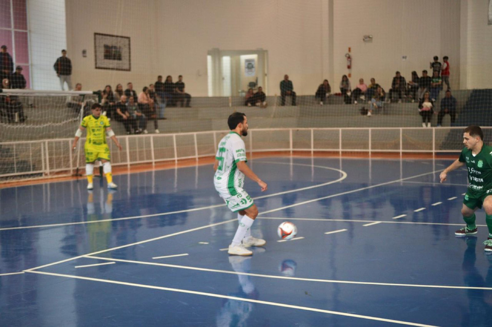
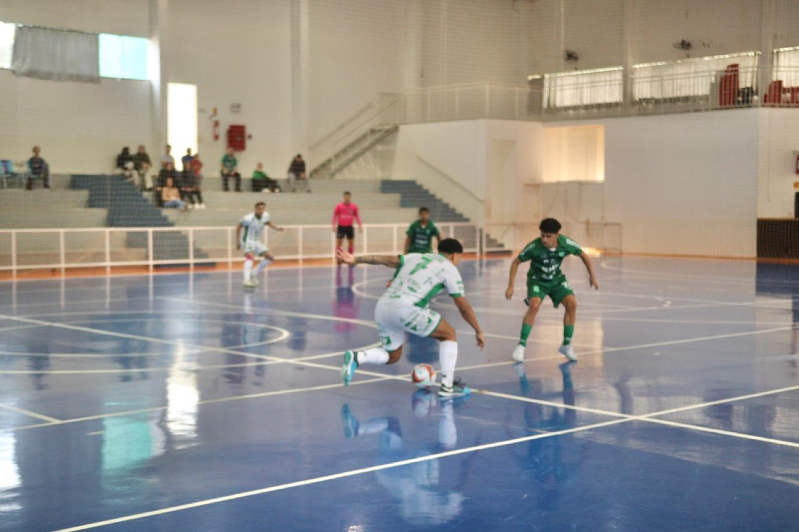
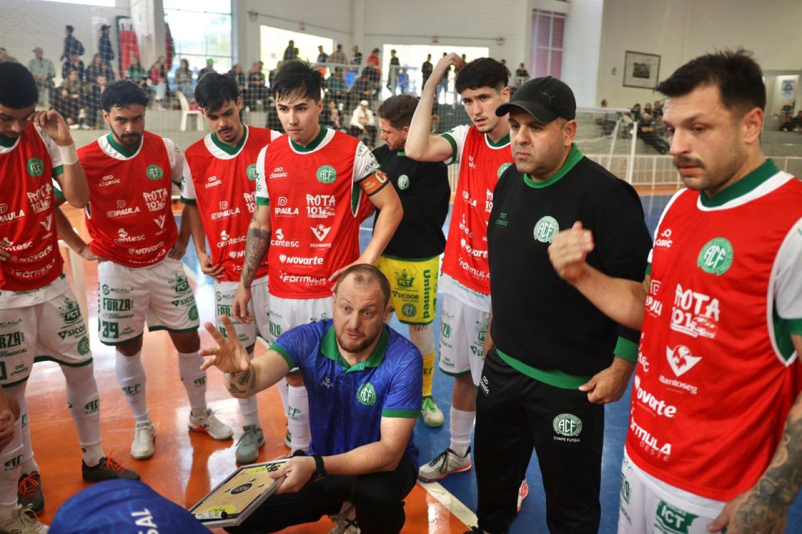
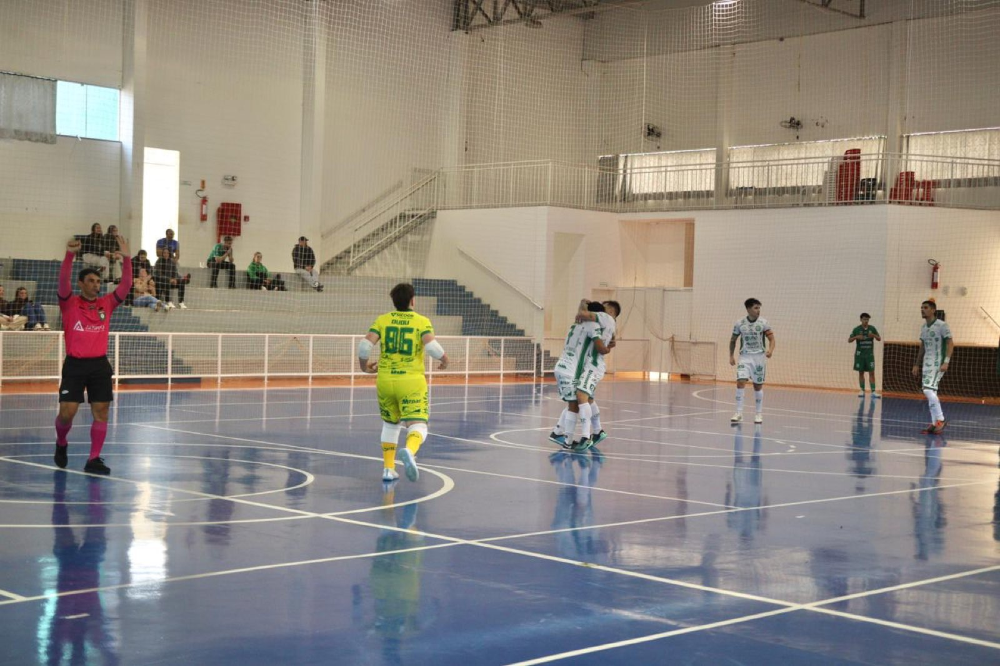

A Prefeitura de Chapecó/Chapecoense/Unochapecó mostrou a sua força na tarde deste domingo (14/6). O Verdão das Quadras goleou a Xaxiense/Arvoredo por 5 a 1, no Centro Integrado de Cultura e Lazer, na cidade de Arvoredo, a 20 km de Chapecó. O duelo valeu pela quinta rodada da primeira fase da Copa Santa Catarina de Futsal.

Mesmo jogando como visitante, a Chape Futsal entrou disposta a impor o seu ritmo e buscar o resultado positivo. O primeiro gol saiu logo a 1'37", com Dudi. Melhor no duelo, o time visitante ampliou a vantagem aos 10'32", com Samuka. Os anfitriões diminuíram a diferença em pênalti convertido por Cris Negão, aos 16'43". A equipe do técnico Léo Schroeder não se abateu e chegou ao quarto gol, novamente com Dudi.


A Chapecoense manteve a intensidade na segunda etapa e construiu a vitória com dois gols de Kassula. O camisa 10 verde-branco balançou as redes aos 7'58" e aos 8'56", garantindo os três pontos para o clube de Chapecó. Com o triunfo, o Verdão das Quadras soma agora seis pontos, em três compromissos, e entrou na zona de classificação às quartas de final. O próximo desafio será no sábado que vem (20/6), às 19h, contra o Lages, pelo Catarinense Série Ouro, fora de casa.

Crédito das fotos: @rogerfotografia/@achapefutsal